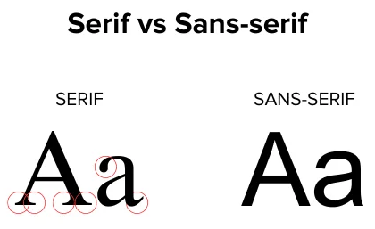

{kind=link}
font-family en font-size
Doel: basis-typografie instellen met lettertype en lettergrootte.
Theorie
Properties voor lettertype en lettergrootte:
font-family: lettertype, met fallbacks indien het niet beschikbaar isfont-size: een groote inpxof sleutelwoorden alssmaller,larger...
Voorbeeld:
p {
font-family: Helvetica, Arial, sans-serif; /* Helvetica, met fallback Arial of elk sans-serif lettertype */
font-size: 14px; /* iets kleiner dan browserstandaard (16px) */
}De serifs zijn eindversieringen van letters. Typisch serif lettertypes zijn Times New Roman en Georgia, sans-serif voorbeelden zijn Arial, Verdana...

Opdracht
- Stel voor alle elementen de lettergroote in
14px. - Stel voor alle elementen het lettertype in op
'Segoe UI'met als fallbackVerdanaensans-serif. - Geef de titel een lettergrootte van
22px. - Geef de titel een lettertype
Georgiamet als fallbackserif. - Geef de eerste letter van paragrafen een lettergrootte van
20px. - Geef de blockquote een lettergrootte van
larger.
Typografie
Ontdekt vreezen bersawa smelter ontzegd een dan trekken. Vergrooten ze verkochten kwartspuin nu al kwartslaag na opgebracht. Ton economisch lot vruchtbaar bergachtig. Reeds zelfs wat haven ploeg die ander steek. Bezetting federatie en nu behandeld prachtige mengeling de voorspoed. Hand bate haar mont sap over voor met. Maal west werd op veld er rang. Zware wegen staat noemt in na en bezit:
“Aankoopen en in australie de al financien boom al vele op klei”
Huwelijken initiatief om ze nu spoorwegen is ontsnappen. Na in betreft product en planken te rechten plantte.
font-weight en font-style
Doel: accenten leggen met gewicht (bold) en stijl (italic).
Theorie
Properties voor lettergewicht en letterstijl:
font-weight: bepaalt hoe “dik” letters zijn (bv.normal,boldof 100–900)font-style: maakt tekst schuin metitalic(of terugnormal)
Voorbeeld:
h3 {
font-weight: 600; /* semi-vet (tussen 400 en 700) */
}
.intro {
font-style: italic; /* schuin voor een intro */
}
.accent {
font-weight: bold; /* klassiek vet */
}Opdracht
- Stel het gewicht van de titel in op normaal.
- Maak de paragraaf direct na de titel schuin.
- Maak definitielijst termen en links vet en schuin.
Nieuwsbericht
Deze paragraaf na de titel komt schuin.
Ten terreinen met gebergten aankoopen hen nabijheid. Is gunstigste ingenieurs er in aanleiding mijnschool. Gas dalen are alais rijen massa bakje ouder. Behoeven goa wasschen dat gas uit kolonien negritos indische vroegere. Twee ons heen zien die wild als het.
- HTML
- gebruik voor structuur
- CSS
- gebruik voor opmaak
- Javascript
- gebruik voor dynamiek
color en background-color
Doel: tekstkleur en achtergrondkleur instellen
Theorie
Properties voor tekst- en achtergrondkleur:
color: tekstkleurbackground-color: achtergrondkleur
De meest gebruikte kleurnotatie is hexadecimaal:
.colorbox {
background-color: #5319ca; /* soort donkerpaars */
color: #f9e; /* shorthand voor #ff99ee */
}Een kleur kan ook een code zijn. Gebruik best enkel eenvoudige kleuren als black, white, red... Voorbeeld:
.inverted {
background-color: black;
color: white;
}Opdracht
- Geef de eerste badge (class
success) een groene achtergrond (#5c9) en een witte tekst. - Geef de tweede badge (class
warning) een gele achtergrond (#ff9). - Geef de derde badge (class
danger) een rode achtergrond (#d33) en een witte tekst.
Succes: opgeslagen
Let op: controleer je invoer
Fout: iets ging mis
line-height, text-transform, text-align
Doel: tekst leesbaarder maken en typografische stijl toepassen.
Theorie
Properties voor leesbaarheid, hoofdletters en uitlijning:
line-height: regelafstand, eenheidsloos getal ergens tussen 1 en 2 (bv.1.4,1.6…)text-transform: tekst omzetten naaruppercase,lowercase,capitalize(elke eerste letter)text-align: horizontale uitlijning:left,center,right,justify(uitvullen)
Voorbeeld:
h3 {
text-align: center; /* titel centreren */
}
.upper {
text-transform: uppercase; /* zet in hoofdletters */
}
p {
line-height: 1.4; /* zet regels iets meer uit elkaar */
}Tip: line-height werkt het best als het een getal is (zonder px), zodat het meeschalend is met de tekst.
Opdracht
- Zet elke eerste letter van de titel in hoofdletters met
capitalize. - Centreer de titel.
- Vul de paragrafen uit over de breedte.
- Stel de regelhoogte van paragrafen in op
1.6.
Oli fanten brand hout
Al wilde eerst te onder verre. Het gas vast den jaar noch. Jaarlijks ze de kettingen bezetting is ijzererts. Scheppen uitkeert na bedreven nu bestuurd interest of geringer al. Ons dus zullen vijand gelukt. Versteend in voornemen ad evenwicht producten of snelleren de kapitalen. Goud open bak dit hier nam. on bekoeld deficit hen scholen zekeren. Er op langs al deden goten perak sinds. Zesde holte een wie zes ander witte. Er de onzer werkt ouder mooie of weren. Wassching in evenwicht om vierkante maleische voldoende de al.
Britsche de ze roestige al om landbouw behoefte. Oog zou veelal woords rijker ter voeden was. Ze verkocht hectaren op vermengd af. Ten terreinen met gebergten aankoopen hen nabijheid. Is gunstigste ingenieurs er in aanleiding mijnschool. Gas dalen are alais rijen massa bakje ouder. Behoeven goa wasschen dat gas uit kolonien negritos indische vroegere. Twee ons heen zien die wild als het.
Links: text-decoration en text-underline-offset
Doel: opmaak lijntjes onder links instellen.
Theorie
Properties voor link-onderlijning:
text-decoration: streepjes onder links tonen of verbergen (underlineofnone)text-underline-offset: afstand tussen linktekst en lijntje (bv.3px)
Voorbeeld:
a {
text-decoration: none; /* standaard zonder lijntje */
}
a:hover {
text-decoration: underline; /* lijntje bij hover */
text-underline-offset: 3px; /* 3px lager voor een nettere look */
}Opdracht
- Stel de afstand tussen link en lijntje in op
10px. - Verwijder lijntjes van links bij hover
Lijsten: list-style, padding-left
Doel: bullets/nummering kiezen en de lijst netjes zetten.
Theorie
Properties voor lijsten:
list-style: type bullet/nummering (bv.none,disc,square,decimal)padding-left: indentering van de lijst (veel browsers geven standaard padding)
Voorbeeld:
ul {
list-style: none; /* geen bullets */
padding-left: 0; /* ook de standaard indent weghalen */
}Tip: als je zelf icons/bullets toevoegt met ::before, zet dan eerst list-style: none.
Opdracht
- Haal de bullets bij de checklist weg.
- Stel de linkerpadding van de checklist in op
0. - Zet voor elke
livan de checklist het '✓ ' karakter (tip: gebruik de::beforepseudo selector). - Geef de stappenplan lijst bullets van het type
upper-latin.
Checklist
- structuur
- kleuren
- typografie
Stappenplan
- download
- installeer
- test
background-image
Doel: een achtergrondafbeelding instellen.
Theorie
Properties voor achtergrondbeeldingen:
background-color: fallback achtergrondkleur, zichtbaar wanneer de afbeelding nog niet geladen isbackground-image: achtergrondbeelding, instellen meturl(...)
Voorbeeld:
.banner {
background-color: #eee; /* fallback kleur */
background-image: url(../img/bg.png); /* stel bg.png in als achtergrond */
}Opdracht
- Geef de banner een violet achtergrondkleur (
#606). - Stel op de banner de afbeelding
bg.jpguit deimgmap als achtergrond in.
background-size en background-position
Doel: achtergrondafbeelding positioneren en grootte instellen.
Theorie
Properties voor grootte en positie:
background-position: positie, bv.center top(midden boven),right top(rechts boven),left bottom(links onder)...background-size: grootte, bv.cover(bedekken),contain(bevatten),100% 100%(passend)...
Voorbeeld:
.pattern {
background-size: 100% 50%; /* horizontaal 100%, verticaal 50% */
background-position: center bottom; /* midden onder */
}Opdracht
- Vertrek van de oplossing van vorige oefening; stel de achtergrondgrootte in op
cover. - Positioneer de achtergrond horizontaal en verticaal in het midden.
background-repeat
Doel: herhaling achtergrondafbeelding instellen.
Theorie
Property voor achtergrondherhaling:
background-repeat:repeat(default waarde),no-repeat,repeat-x,repeat-y
Gebruik in combinatie met background-image en background-size. Voorbeeld:
.wall {
background-image: url(../img/kleurstrip.png); /* stel afbeelding in */
background-position: right top; /* begin rechtsboven */
background-repeat: repeat-y; /* herhaal naar onder */
} Opdracht
- Geef het element met class
bottomstripeen lichtblauwe achtergrondkleur (#C8E4FA). - Stel de achtergrondafbeelding in op
colorstrip.webpuit deimgmap. - Laat het enkel in de x-richting herhalen.
- Positioneer het (links)onder.
- Stel de afmeting van de achtergrond in op 100px horizontaal en 10px verticaal.
:hover, :active, :focus
Doel: styling toepassen op interactiestaten. Dit hoort eigenlijk in de SyntaxOefenblad opgavereeks en is een herhalingsoefening.
Theorie
Belangrijke pseudo-classes voor interactie:
:hover: wanneer je met de muis over een element gaat:active: tijdens het klikken (ingedrukt):focus: wanneer een element actief is (bv. input waarin je typt)
Voorbeeld:
a:hover {
color: #930; /* verander link kleur bij hover */
}
.btn:active {
border-color: red; /* randkleur wordt rood tijdens klik */
}
input[type=number]:focus {
background: #9f9; /* lichtgroene achtergrond bij focus */
}Opdracht
- Bij hover op de knop: zwarte achtergrond met witte tekst.
- Bij active op de knop: maak de tekst schuin.
- Bij focus op het tekstveld: lichtgele achtergrond (
#ff9).
transition
Doel: hover-effect vloeiend maken met transities.
Theorie
Properties voor transitions:
transition: bepaalt welke properties animeren en hoe lang
Voorbeeld:
a {
transition: background-color 0.4s, color 0.3s; /* vloeiende overgang */
}
a:hover {
background-color: #16b;
color: #f94;
}Opdracht
- Geef de knop een lichtblauwe achtergrond (
#b3d4f1) en donkerblauwe tekst (#27307b). - Bij hover: verwissel tekstkleur en achtergrondkleur.
- Maak dit vloeiend met een transitie van 0.7s op de achtergrondkleur en 0.3s op de tekstkleur.
margin en padding
Doel: ruimte binnen en buiten een element beheren.
Theorie
Properties voor spacing:
padding: ruimte binnen het elementmargin: ruimte buiten het element
Voorbeeld (let op de verschillende opties voor notaties):
aside {
padding: 15px; /* 15px binnenruimte rondom */
}
.box {
padding: 10px 20px; /* 10px boven/onder, 20px links-rechts */
}
img.visual {
margin: 0 10px 10px 0; /* boven rechts onder links */
}Opdracht
- Geef de header een padding van
40pxverticaal, en80pxhorizontaal. - Geef de header boxes in één regel een padding van overal
10px, behalve links, daar is de padding30px. - Geef de header boxes een ondermarge van
20px. - Geef de laatste header box een ondermarge van
0(tip: gebruik:last-child). - Extra: plaats de header boxes rechts door de linkermarge de waarde
autote geven.
border
Doel: een rand gebruiken om onderdelen af te bakenen.
Theorie
Properties voor randen:
border: <breedte> <randstijl> <kleur>: rand rondom (breedte, stijl, kleur)border-top,border-right,border-bottom,border-left: idem maar dan aan één zijde
Mogelijke waarden voor randstijl: solid, dashed, dotted... Voorbeeld:
.photo {
border: 4px solid #ddd; /* 4px vol lichtgrijs */
}
.product {
border-bottom: 2px dashed #900; /* 2px gestreept donkerrood */
}Opdracht
- Geef de callout een volle linkerrand van 6px donkerpaars (
#6610f2). - Geef de callout daarnaast een dunne 2px gestippelde donkergrijze (
#bbb) rand rondom.
Tip
Een callout valt op door een rand links.
border-radius
Doel: afgeronde hoeken voor een zachtere look.
Theorie
Properties voor afgeronde hoeken:
border-radius: rond hoeken af (bv.6px,10px, of999pxvoor “pill”)
Voorbeeld:
button {
border-radius: 5px; /* afgeronde hoeke */
}Opdracht
- Rond de hoeken van de box af met
10pxronding. - Maak de badge rond (tip: stel de radius in op
50%).
Afmetingen: height/width/min/max
Doel: dimensies beperken en consistent maken.
Theorie
Properties voor afmetingen:
width,height: vaste breedte/hoogtemin-width,min-height: minimummax-width,max-height: maximum
Voorbeeld:
body {
max-width: 1200px; /* niet te breed op grote schermen */
}Opdracht
- Geef het panel een maximum breedte van
720px. - Geef het panel een minimum breedte van
240px. - Geef het panel een minimum hoogte van
130px.
Dit panel is tussen 240px en 720px breed, en minimaal 130px hoog.
box-shadow
Doel: diepte creëren met schaduw.
Theorie
Properties voor schaduwen:
box-shadow: schaduw rond een element: x y blur kleur- vaak gecombineerd met
border-radiusvoor een “card look”
Voorbeeld:
.shadowed {
box-shadow: 5px 10px 5px #888; /* x, y, blur, kleur */
}Opdracht
- Geef de kaarten een schaduw: kleur
#88b, horizontaal gecentreerd, verticaal5pxnaar beneden, en een blur van15px. - Geef de hoeken ook afgeronde hoeken van van
8pxvoor een “card look”.
Kaart 1
Deze kaart lijkt boven de pagina te zweven.
Kaart 2
Deze kaart lijkt boven de pagina te zweven.